Architectures for Hardware Acceleration
🏎️ Finite Field Arithmetic PDF 1 · 33 slides
Natural Numbers: ℕ = {0, 1, 2, 3, …} | Integers: ℤ = {…, −2, −1, 0, 1, 2, …}
Divisibility: We say y divides x (written y|x) if there exists an integer z such that x = z·y.
Division Algorithm: Given integers x and y (y > 0), there exist unique q and r such that x = q·y + r, where 0 ≤ r < y. Here r = x mod y, q = x div y.
Prime Number: An integer p > 1 with no divisors other than 1 and itself.
GCD: gcd(a, b) = the largest integer that divides both a and b.
Finds the GCD by repeated division. The key insight is: gcd(a, b) = gcd(b, a mod b).
gcd(a, b) = gcd(b, a mod b), otherwise
🔧 Pit Stop — Euclidean Algorithm Example
Find gcd(252, 105):
252 = 2 × 105 + 42 → gcd(252, 105) = gcd(105, 42)
105 = 2 × 42 + 21 → gcd(105, 42) = gcd(42, 21)
42 = 2 × 21 + 0 → gcd(42, 21) = 21
Finds integers s and t such that: gcd(a, b) = s·a + t·b (Bézout's Identity).
This is used to find the modular inverse: if gcd(a, m) = 1, then a⁻¹ mod m exists and can be computed with this algorithm.
a ≡ b (mod m) means m divides (a − b). Properties: reflexive, symmetric, transitive.
The mod n relation partitions ℤ into n equivalence classes, each containing exactly one element from {0, 1, 2, …, n−1}.
Fermat's Little Theorem: If p is prime, then ap ≡ a (mod p), so ap−1 ≡ 1 (mod p).
Euler's Theorem: aφ(n) ≡ 1 (mod n), where φ(n) is Euler's totient function.
Group (G, ·)
A set G with one operation satisfying: closure, associativity, identity element, and inverse. If also commutative → Abelian group.
Ring (R, +, ·)
Two operations. Abelian group under +, associative under ·, and distributive law holds. May lack multiplicative inverse.
Field (F, +, ·)
A ring where every non-zero element has a multiplicative inverse. Both + and · are commutative.
Finite Field GF(p)
A field with p elements (p must be prime). All operations are performed mod p. Also called a Galois Field.
Elements are polynomials of degree < n with coefficients in GF(2) (i.e., coefficients are just 0 or 1).
Addition: XOR of corresponding coefficients (no carry propagation — super fast in hardware!).
Multiplication: Polynomial multiplication, then reduce modulo an irreducible polynomial.
GF(2⁸) in AES: Uses irreducible polynomial P(x) = x⁸ + x⁴ + x³ + x + 1.
A(x) × B(x) = polynomial product mod P(x) [shift-and-XOR with reduction]
This is used to reduce multiplication results back into the field.
🏆 Advanced Encryption Standard PDF 2 · 38 slides
AES (Rijndael) is a symmetric block cipher standardized by NIST. It operates on a 128-bit block (arranged as a 4×4 byte matrix called the State Array).
Key sizes: 128-bit (10 rounds), 192-bit (12 rounds), or 256-bit (14 rounds).
Each round (except the last) performs four transformations in order:
1. SubBytes (Byte Substitution)
Each byte is replaced using the S-Box, a non-linear substitution providing confusion. The S-Box is based on the multiplicative inverse in GF(2⁸) followed by an affine transformation.
2. ShiftRows
Rows of the state are cyclically shifted left. Row 0: no shift, Row 1: shift by 1, Row 2: shift by 2, Row 3: shift by 3.
3. MixColumns
Each column is treated as a polynomial over GF(2⁸) and multiplied by a fixed polynomial c(x) = 3x³ + x² + x + 2. Provides diffusion.
4. AddRoundKey
The state is XORed with the round key (derived from key expansion). This is the only step that uses the secret key.
Note: The final round omits the MixColumns step. Before Round 1, an initial AddRoundKey is applied.
The original cipher key is expanded into a key schedule producing round keys for each round.
For AES-128: The 128-bit key is expanded into 44 words (4 words per round × 11 = 44). Each word is 32 bits.
Key expansion uses a function g() that applies: RotWord → SubBytes (on each byte) → XOR with Round Constant (Rcon).
🔧 Pit Stop — The S-Box Deep Dive
The S-Box maps an 8-bit input c to an 8-bit output s = S(c). Two steps:
Step 1: Find the multiplicative inverse x' = c⁻¹ in GF(2⁸) using the irreducible polynomial x⁸ + x⁴ + x³ + x + 1. Zero maps to itself.
Step 2: Apply an affine transformation: xout = A · x' + c, where A is a specific 8×8 binary matrix and c = 0x63.
The four circular rotations are through 4, 5, 6, and 7 bit positions to the right, then XORed together with the constant byte.
🔧 Pit Stop — MixColumns Math
Each column of the State is treated as a 4-term polynomial over GF(2⁸) and multiplied modulo x⁴ + 1 by the fixed polynomial:
This is equivalent to matrix multiplication in GF(2⁸):
[1 2 3 1] × [s1]
[1 1 2 3] [s2]
[3 1 1 2] [s3]
128-bit block = 4×4 byte State Array.
It only does: SubBytes → ShiftRows → AddRoundKey.
⚙️ Number Theoretic Transform PDF 3 · 21 slides
The Number Theoretic Transform (NTT) is the DFT applied over finite fields/rings instead of complex numbers.
It's a critical tool in Post-Quantum Cryptography (PQC) and Homomorphic Encryption (HE).
Key advantage: Enables polynomial multiplication with complexity O(n log n) instead of O(n²) — and all arithmetic is integer-based with zero floating-point errors.
Unlike the DFT (which represents signals in the frequency domain), the NTT has no physical interpretation. However, it preserves the crucial convolution theorem.
| Property | DFT | NTT |
|---|---|---|
| Domain | Complex numbers ℂ | Integers mod prime q |
| Roots of Unity | e2πi/n | ω where ωⁿ ≡ 1 (mod q) |
| Arithmetic | Floating point (approximate) | Integer (exact) |
| Use Case | Signal processing, audio | Cryptography (PQC, HE) |
| Complexity | O(n log n) | O(n log n) |
Choose a prime q such that n | (q−1). Then a primitive n-th root of unity ω exists modulo q.
ω satisfies: ωⁿ ≡ 1 (mod q), and ωᵏ ≢ 1 for 0 < k < n.
Inverse INTT: a[i] = n⁻¹ · Σₖ A[k]·ω⁻ⁱᵏ mod q
The core computational unit in NTT (analogous to the FFT butterfly):
b' = a − ω·b mod q
Cooley-Tukey NTT: Decimation-In-Time (DIT) — used for forward NTT.
Gentleman-Sande NTT: Decimation-In-Frequency (DIF) — used for inverse NTT.
To multiply polynomials A(x) and B(x) efficiently:
Step 1
Compute NTT(A) and NTT(B) — transform to "NTT domain"
Step 2
Pointwise multiply: C[k] = NTT(A)[k] · NTT(B)[k] mod q
Step 3
Compute INTT(C) — transform back to get the product polynomial
Complexity
Total: O(n log n) instead of O(n²) — this is the convolution theorem over finite fields!
CRYSTALS-Kyber: NIST PQC standard for key encapsulation. Uses NTT for fast polynomial ops in Module-LWE.
CRYSTALS-Dilithium: NIST PQC digital signature scheme — also NTT-based.
NTRU: Ring-based encryption using cyclic convolution via NTT.
NTT reduces key generation, encryption, and decryption from O(n²) to O(n log n).
🛞 Lightweight Ciphers PDF 4 · 24 slides
Conventional algorithms (AES, RSA) were designed for servers and PCs — devices with plenty of compute, memory, and power.
But the Internet of Things (IoT) has created billions of resource-constrained devices: RFID tags, sensors, implantable medical devices, smart cards.
These devices operate at the Perception Layer — they have very limited compute power, are often battery-powered, and cannot run heavy algorithms like AES or RSA.
Cloud/Storage Layer
Full-power: AES, RSA — no constraints.
Gateway Layer
AES, conventional ciphers — moderate resources.
Perception Layer (IoT)
Massive number of tiny devices. Need lightweight ciphers (SIMON, Trivium, PRESENT).
NIST Standardization
NIST standardized lightweight ciphers in 2015 after evaluating submissions based on device profiles.
Low Area
Minimize gate equivalents (GE). Target: <2000 GE for ultra-constrained devices. GE = area of a 2-input NAND gate.
Low Power
Minimize dynamic and static power. Critical for battery-operated and passive (energy-harvesting) devices.
Low Latency
Fast encryption for real-time applications (automotive, aerospace). Minimize clock cycles from plaintext → ciphertext.
Flexibility
Support multiple platforms: 8-bit MCU, 32-bit, FPGA, ASIC. Adjustable key/block sizes for different use cases.
Security Strength: Must exceed 112 bits. Lightweight ≠ weak — it's optimized, not dumbed down.
Low Overhead for Multiple Functions: Encryption and decryption sharing the same logic circuit saves area (e.g., Feistel ciphers).
Ciphertext Expansion: Minimize data overhead — ideal for storage/transmission constrained devices.
Side-Channel Attacks: Hardware implementations are prone to timing, power, and EM attacks. Differential fault analysis can extract keys from faulty ciphertexts.
Plaintext-Ciphertext Limit: Acceptable to limit data processed under a single key for lightweight applications.
Related-Key Attacks: Adversary exploits known relations between keys to guess unknown keys.
Smaller block size: 64-bit instead of 128-bit → reduces memory overhead.
Smaller key size: <96 bits (e.g., PRESENT uses 80-bit key).
Simpler rounds: 4-bit S-Box (PRESENT) instead of 8-bit (AES). Saves area: 367 GE vs 395 GE.
Simpler key schedule: On-the-fly sub-key generation during runtime to save power and resources.
Note: AES-128 and Triple-DES are NIST-approved lightweight block ciphers for resource-constrained environments.
| Cipher | Block Size | Key Size | Rounds | Structure |
|---|---|---|---|---|
| PRESENT | 64-bit | 80/128-bit | 31 | SPN |
| SIMON | 32–128-bit | 64–256-bit | 32–72 | Feistel |
| SPECK | 32–128-bit | 64–256-bit | 22–34 | ARX |
| GIFT | 64/128-bit | 128-bit | 28/40 | SPN |
| AES-128 | 128-bit | 128-bit | 10 | SPN |
| Cipher | Key Size | Strengths | Notes |
|---|---|---|---|
| Grain | 128-bit | Flexible, supports authentication | LFSR + NLFSR, hardware optimized |
| Trivium | 80-bit | Simple, widely analyzed | 3 shift registers, very compact |
| Mickey | 80-bit | — | Less flexible, vulnerable to timing/power SCA |
Hash Functions: Smaller internal state & output size. Collision resistance may be relaxed. Supports smaller message sizes (e.g., max 256 bits). Examples: PHOTON, SPONGENT, QUARK.
MACs: Shorter tag sizes (conventional = 64 bits). Some apps (VoIP) can tolerate occasional inauthentic messages. NIST-approved: CMAC, GMAC, HMAC.
⚡ Trivium — Stream Cipher PDF 5 · 9 slides
A stream cipher is a symmetric encryption algorithm that operates bit by bit (or byte by byte) on plaintext.
Inputs: plaintext stream + Secret Key (fixed length) + Initialization Vector (IV) (fixed length).
The key and IV initialize the state of the Key Stream Generator, which produces a pseudo-random key stream. Plaintext is XORed with this key stream to produce ciphertext.
Trivium is a hardware-oriented lightweight stream cipher designed for extreme compactness.
Key: 80-bit | IV: 80-bit | Output: up to 2⁶⁴ bits of key stream.
Internal State: 288 bits organized into 3 interconnected shift registers:
Register A
93 bits (positions 1–93). Feedback taps and XOR operations.
Register B
84 bits (positions 94–177). Cross-connected with A and C.
Register C
111 bits (positions 178–288). Completes the circular feedback loop.
Each clock cycle, one output bit is generated by XORing specific taps from all three registers. The registers update using AND + XOR combinations of their own bits and feedback from neighboring registers.
Various approaches for building key stream generators:
LFSRs (Linear Feedback Shift Registers) — simple but predictable if used alone.
NLFSRs (Non-Linear Feedback Shift Registers) — add non-linearity for security.
FCSRs (Feedback with Carry Shift Registers) and T-functions — alternative designs.
🛠️ SIMON — Block Cipher PDF 6 · 16 slides
SIMON is a family of lightweight balanced Feistel block ciphers designed by the NSA.
Optimized for high performance in hardware — targeting constrained pervasive computing devices and IoT.
Proposed alongside SPECK (which is optimized for software instead).
Naming convention: SIMON 2n/m — where 2n = block size and m = key size.
Example: SIMON64/128 = 64-bit block (two 32-bit words) + 128-bit master key.
| Configuration | Block (2n) | Key (m) | Word (n) | Key Words | Rounds |
|---|---|---|---|---|---|
| SIMON32/64 | 32 | 64 | 16 | 4 | 32 |
| SIMON64/128 | 64 | 128 | 32 | 4 | 44 |
| SIMON128/256 | 128 | 256 | 64 | 4 | 72 |
Based on a balanced Feistel network — a symmetric structure where encryption and decryption are highly symmetric.
The round function uses three simple operations:
Bitwise AND (&)
Non-linear operation providing confusion.
Bitwise XOR (⊕)
Linear mixing operation.
Circular Left Shift (Sj)
Rotations by 1, 2, and 8 positions provide diffusion.
The Feistel map Rk for round key k:
where f(x) = (S¹(x) AND S⁸(x)) ⊕ S²(x)
The key schedule expands the master key into all required round keys.
For SIMON64/128: Generates 44 round keys (32-bit each) from the 128-bit master key.
It combines previously cached round keys with a constant c and a 1-bit round constant using XOR and circular shifts.
Encryption
Apply the round function 44 times to the 64-bit plaintext block using the generated round keys (k₀, k₁, …, k₄₃). Can run in parallel with key expansion.
Decryption
1) Swap left and right 32-bit words.
2) Apply round function 44 times with reverse key order
(k₄₃, k₄₂, …, k₀).
3) Swap left and right words again.
SPECK: ARX, optimized for software.
Both designed by NSA for lightweight applications.
🛣️ Network on Chip (NoC) PDF 7 · 76 slides
By 2005, single-core performance hit a wall due to power dissipation and diminishing returns from ILP.
The shift to multicore/manycore processors meant 10–20 cores, cache banks, memory controllers, and accelerators all need to communicate on-chip.
An on-chip network (NoC) manages all senders, receivers, and data packets. Unlike the internet, packets cannot be dropped in an NoC — reliable delivery is mandatory.
Deadlock
Circular dependency among packets — none can reach their destination. Like a 4-way traffic standoff.
Starvation
A packet can never reach its destination because other packets keep blocking it.
Livelock
A packet moves around endlessly in circles but never reaches its destination.
Solution
Complex routing protocols and flow control mechanisms to prevent all three issues.
An NoC is modeled as a graph with nodes and edges.
Node (Router): A generic communication unit attached to a core, cache bank, memory controller, or accelerator. Multiple cores/caches are grouped into a tile with one router per tile.
Edge (Link/Channel): Communication path between two nodes. "Link" = physical connection, "Channel" = logical connection.
Message delivery is atomic: either the entire message is delivered, or nothing is delivered.
🔧 Mesh Topology
A simple 2D grid where adjacent nodes on the same row/column are connected with rectilinear (horizontal/vertical) links.
Pros: Very easy to fabricate in modern VLSI — only horizontal and vertical wires needed.
Cons: High network diameter. For an N×N mesh: diameter = 2N − 2 (distance between two diagonally opposite corners).
🔧 Torus Topology
A mesh with wrap-around connections between the ends of each row and column.
Advantage: Reduces diameter to roughly N (halved from 2N−2).
Disadvantage: Introduces very long wires spanning the chip, causing large delays.
Folded Torus: Interleaves node connections (each node connects to the node 2 columns/rows away instead of the directly adjacent one). This eliminates long wires while preserving the torus properties, at the cost of 2× delay between adjacent nodes.
🔧 Hypercube Topology
A recursive, high-radix network. H₀ = single node. H₁ = two copies of H₀ connected. H₂ = two copies of H₁ with corresponding nodes connected, and so on.
Nodes are labeled with binary numbers. Traversing a link flips exactly one bit.
For N = 2ᵏ nodes: each node has log₂(N) neighbors, and the diameter = log₂(N).
The maximum distance (Hamming distance) between two labels equals log₂(N).
🔧 Clos Network
A three-layer network described by parameters n, m, and r:
Ingress layer: r switches, each [n × m]. Accepts input messages.
Middle layer: m switches, each [r × r]. Routes between ingress and egress.
Egress layer: r switches, each [m × n]. Outputs to destination.
Total I/O: n·r inputs and n·r outputs. Any input can reach any output.
Key properties:
• If m ≥ n → can always connect unused terminals by rearranging existing connections (rearrangeably non-blocking).
• If m ≥ 2n−1 → can connect without ANY rearrangement (strictly non-blocking).
Folded Clos: Input and output terminals connect to the same set of routers.
🔧 Butterfly Network
Uses log₂(N) layers of 2×2 switches for N input/output terminals.
Each layer progressively routes messages by dividing the destination space in half (binary decision tree).
Diameter: log₂(N) + 1 — significantly better than torus (~N).
Links: N + N·log₂(N) — more than torus (2N), reducing congestion.
Drawback: Only a single path between any source-destination pair (low path diversity).
Folded Butterfly: Input and output nodes are the same physical routers.
| Topology | Diameter | Links | Path Diversity | Fabrication |
|---|---|---|---|---|
| Mesh (N×N) | 2N − 2 | ~2N² | Multiple | Easy (rectilinear) |
| Torus (N×N) | N | ~2N² | Multiple | Has long wires |
| Folded Torus | N | ~2N² | Multiple | No long wires |
| Hypercube | log₂(N) | N·log₂(N)/2 | High | Difficult (oblique) |
| Butterfly | log₂(N)+1 | N+N·log₂(N) | Single path | Moderate |
Data is broken into progressively smaller units for efficient routing:
1. Message
Logical unit from the application layer. Too big to handle as one piece — divided into packets.
2. Packet
The routing entity (typically 64–128 bytes). All bits in a packet follow the same path. NoCs generally do not drop packets.
3. Flit (Flow Control Digit)
Basic unit for router storage & flow control (8–16 bytes). Types: Head (routing info), Body, Tail. All flits of a packet follow the same route.
4. Phit (Physical Digit)
Chunk transmitted in one clock cycle on the physical link (e.g., 32 bits on a 32-wire link). A flit may contain multiple phits.
Head flit contains destination router ID and routing info. Routers analyze it to compute the route; body and tail flits follow along.
Flow control ensures that buffers don't overflow — since NoCs cannot drop packets, the upstream router must know if the downstream router has space.
🔧 Credit-Based Flow Control
Router A maintains a credit count = estimate of free buffers at downstream router B.
Initially, credits = number of buffers in B. When A sends a flit, it decrements credits. When B frees a buffer, it sends a credit message to A, which increments credits. If credits = 0, A stops sending.
t_f = time to send a flit
t_ph = time for one phit to traverse link
t_pr = time to process a message
To prevent stalls: B needs at least t_D / t_f buffers. If A starts with t_D/t_f credits, it will never run out (credits return within t_D cycles).
Overhead: One credit message per freed buffer — increases network load.
🔧 On-Off Flow Control
Uses two thresholds: N_OFF (stop sending) and N_ON (resume sending).
When free buffers at B reach N_OFF → B sends "OFF" to A → A stops sending.
When free buffers rise to N_ON → B sends "ON" to A → A resumes.
N_OFF ≥ t_D / t_f (must accommodate in-flight flits after OFF is sent but before A receives it).
N_ON > N_OFF (to avoid frequent on-off oscillation — engineering decision based on simulation).
Advantage over credit-based: Fewer control messages (only ON/OFF, not per-buffer). More power efficient.
🔧 Message-Based (Circuit Switching) Flow Control
A probe packet is sent along the route to reserve bandwidth and buffer space at each router.
Once the probe reaches the destination, an acknowledgement is sent back to the source.
Only then does the actual data transmission begin.
K = number of hops
L = packet length (flits)
B = link bandwidth (flits/cycle)
2K cycles for probe + ack round trip. L/B cycles to put last byte on first link. K−1 cycles for last byte to traverse remaining hops.
A routing node consists of: Buffers (store incoming flits), Switch/Crossbar (connects input to output buffers), Routing & Arbitration Unit (decides connections), and Link Controller (manages physical link).
Packet: 64-128 bytes, same route
Flit: 8-16 bytes, flow control unit (Head/Body/Tail)
Phit: 1 clock cycle on the wire
Distance between two diagonally opposite corners. Torus halves this to N.
t_D = t_f + t_ph + 2·t_pr
❓ Piston Cup Question Bank
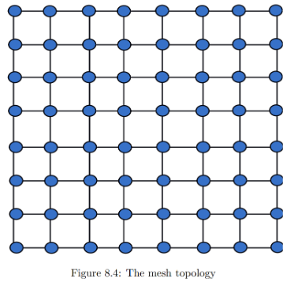
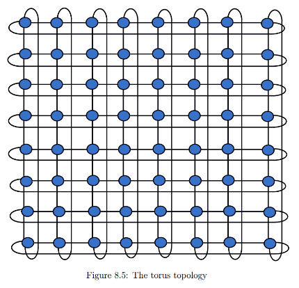
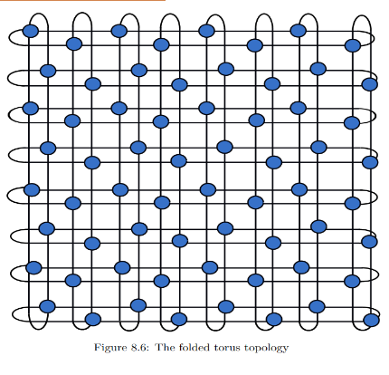
Mesh Topology: A 2D grid where adjacent nodes on the same row/column are connected with rectilinear links. Easy to fabricate, but has a higher diameter. Diameter = 2N − 2.
Torus Topology: A mesh with wrap-around connections between the ends of each row and column. This halves the diameter but introduces very long wires that increase delay. Diameter = N.
Folded Torus: Solves the long-wire problem of the standard torus by interleaving node connections (nodes connect to the one 2 positions away). This eliminates long wires while maintaining the exact same properties and diameter. Diameter = N.
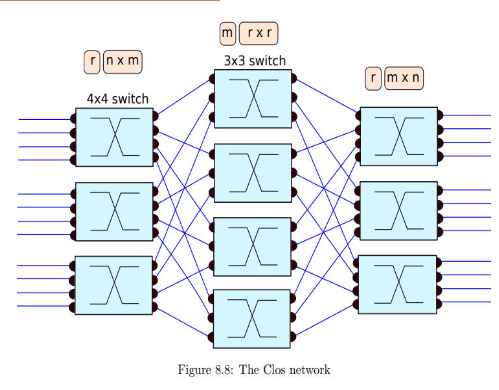
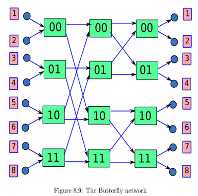
Clos Network: A three-layer network consisting of Ingress, Middle, and Egress layers. It provides high path diversity. It can be designed to be rearrangeably non-blocking (if Middle switches m ≥ Ingress inputs n) or strictly non-blocking (if m ≥ 2n−1). Folded Clos allows input and output terminals to connect to the same set of routers.
Butterfly Network: Uses log₂(N) layers of 2×2 switches. Each layer divides the destination space in half, routing like a binary decision tree. It has a low diameter of log₂(N) + 1 but suffers from poor path diversity (only a single path exists between any source-destination pair).
- Message: The logical unit of data generated by the application layer. Often too large to be routed at once.
- Packet: The basic routing entity (typically 64–128 bytes). A message is broken down into packets. All bits in a packet follow the same path.
- Flit (Flow Control Digit): The basic unit of flow control and router storage (8–16 bytes). Packets are broken into flits. Types include Head (contains routing info), Body, and Tail flits.
- Phit (Physical Digit): The chunk of data transmitted across the physical link in a single clock cycle (e.g., 32 bits on a 32-wire link). A flit consists of one or more phits.
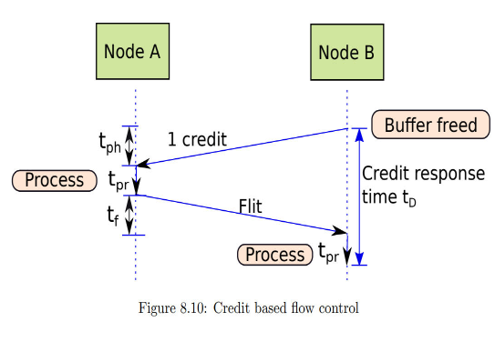

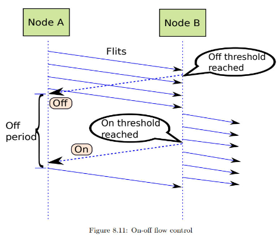
Credit-Based Flow Control: The upstream router keeps a count ("credits") of the free buffers available in the downstream router. Sending a flit decrements credits; when the downstream frees a buffer, it sends a credit message back, incrementing the count. Requires at least t_D / t_f buffers downstream to avoid stalls.
On-Off Flow Control: The downstream router uses two buffer thresholds: N_OFF and N_ON. When buffers drop below N_OFF, it sends an "OFF" signal to stop the upstream router. When buffers rise above N_ON, it sends an "ON" signal to resume. Reduces control message overhead compared to credit-based.
Message-Based (Circuit Switching): A probe packet is sent from source to destination to reserve bandwidth and buffer space along the entire path. Once the destination sends an acknowledgement back, the actual data transmission begins. High setup latency but ensures guaranteed delivery once established.
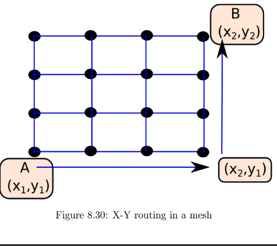

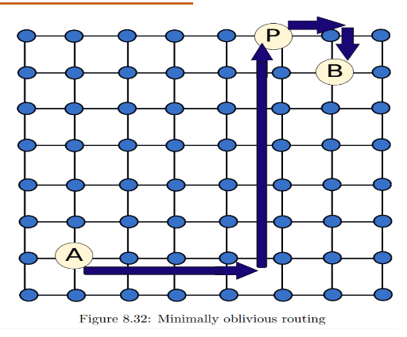
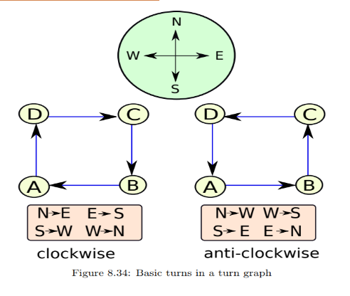
Dimension Ordered Routing (DOR): A strict routing protocol where packets must traverse one dimension entirely before moving to the next (e.g., XY routing in a 2D mesh, moving all the way horizontally then all the way vertically). This strict ordering naturally prevents deadlocks.
Oblivious Routing: The routing path is determined entirely by the source and destination addresses, without taking the current network state (like congestion) into account.
Minimally Oblivious Routing: A subset of oblivious routing where the chosen path is strictly one of the shortest paths (minimal distance) between the source and destination.
Adaptive Routing: The router dynamically chooses the path based on current network conditions. It can route packets around congested nodes or faulty links to improve overall throughput and reliability.
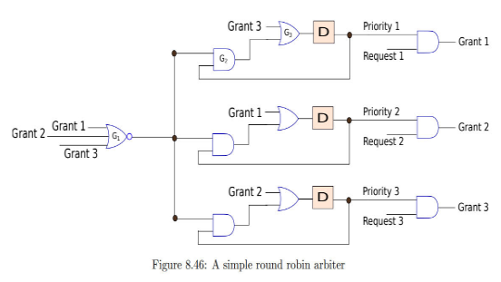
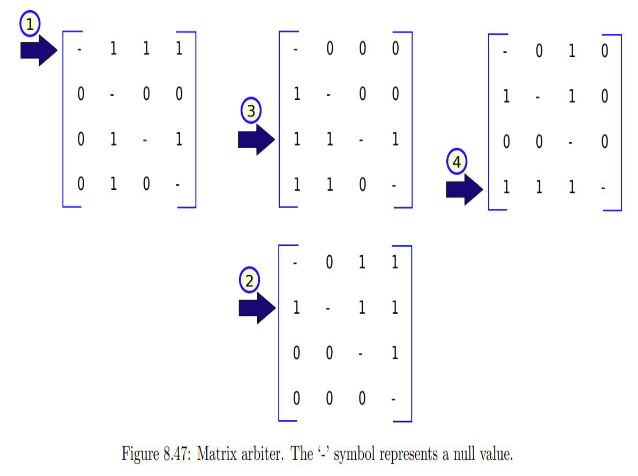
Round Robin Arbiter: Grants access to requesting inputs in a cyclic, sequential order. Once an input is granted the resource, it is moved to the lowest priority for the next cycle. This guarantees fairness and prevents starvation, but does not allow for priority-based allocation.
Matrix Arbiter: Uses a 2D matrix of priority bits to resolve conflicts. If requester i has priority over requester j, the matrix bit (i,j) is set. Every time a request is granted, the matrix is updated to lower that requester's priority relative to all others. This provides a fast, hardware-efficient way to implement a Least-Recently-Served priority scheme.
Arbiter: A hardware component that resolves contention for a single shared resource among multiple requesters (e.g., multiple input ports wanting to write to the same crossbar output port).
Allocator: A higher-level component that resolves contention across multiple resources simultaneously. It matches multiple requesters to multiple available resources (e.g., matching N input ports to M output ports in a router). An allocator typically consists of multiple arbiters working together.
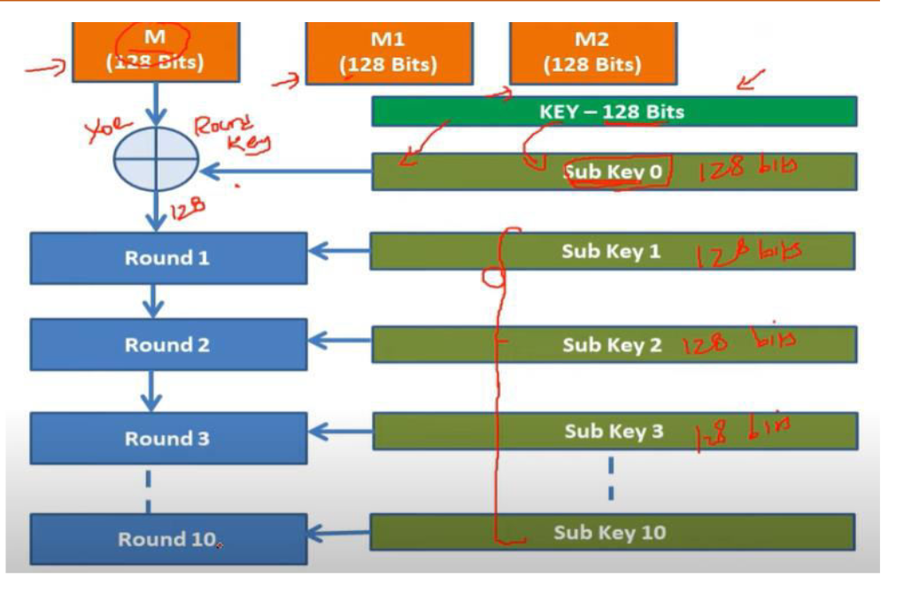
AES is a symmetric block cipher standardized by NIST. It operates on a 128-bit block (arranged as a 4×4 byte matrix called the State Array). It uses varying round counts based on key size: 10 rounds for 128-bit key, 12 rounds for 192-bit, and 14 rounds for 256-bit.
Each standard round consists of four transformations:
- SubBytes: A non-linear byte substitution using a fixed S-Box (provides confusion).
- ShiftRows: Rows of the State Array are cyclically shifted left by 0, 1, 2, and 3 positions respectively.
- MixColumns: Columns are multiplied by a fixed polynomial matrix over GF(2⁸) (provides diffusion).
- AddRoundKey: The State is XORed with the round key (the only step using the secret key).
The final round omits the MixColumns step.
Block Cipher vs. Stream Cipher: A block cipher (like AES or SIMON) encrypts data in fixed-size chunks (e.g., 64 or 128 bits) all at once using a fixed transformation. A stream cipher (like Trivium) generates a continuous pseudo-random key stream and encrypts data bit-by-bit or byte-by-byte using XOR.
Pseudo Random Number Generation (PRNG): The generation of a sequence of numbers that appear random but are actually produced by a deterministic algorithm using an initial seed. Essential in cryptography for generating strong keys, Initialization Vectors (IVs), and nonces.
Symmetric vs. Asymmetric Cipher: Symmetric ciphers (like AES) use the same secret key for both encryption and decryption; they are fast and good for bulk data, but require secure key distribution. Asymmetric ciphers (like RSA) use a pair of keys: a public key for encryption and a private key for decryption; they solve the key distribution problem but are computationally much heavier.
🎯 MCQ QUIZ
Unit 3 Quiz
1. Which of the statement is true?
2. Phit in NoC represents the
3. The Physical Unclonable Function (PUF) which support limited/small number of quality challenge response pairs is called
4. A situation where we have a set of flits (in NoC) that are not able to make progress because of circular wait is known as
5. The Physical Unclonable Function generate the CRPs by exploiting the
6. A Physical Unclonable Function (PUF) which measures the distinctive challenge-response pair (CRP) generation quality, that is, distinguishability, of a PUF with respect to other instances is called
7. In the context of the Network on Chips (NoC) the packet is divided into several flow control digits, referred as
8. Successful modelling attacks on PUF require an access to
9. Butterfly PUF is designed by exploiting the
10. Ring Oscillator PUFs fail to generate a reliable response if
11. AES supports the
12. The Mix columns is involved in AES as below
AHA Unit 3 Notes · Dr. Sudeendra Kumar K · PES University
"Float like a Cadillac, sting like a Beemer." — Lightning McQueen